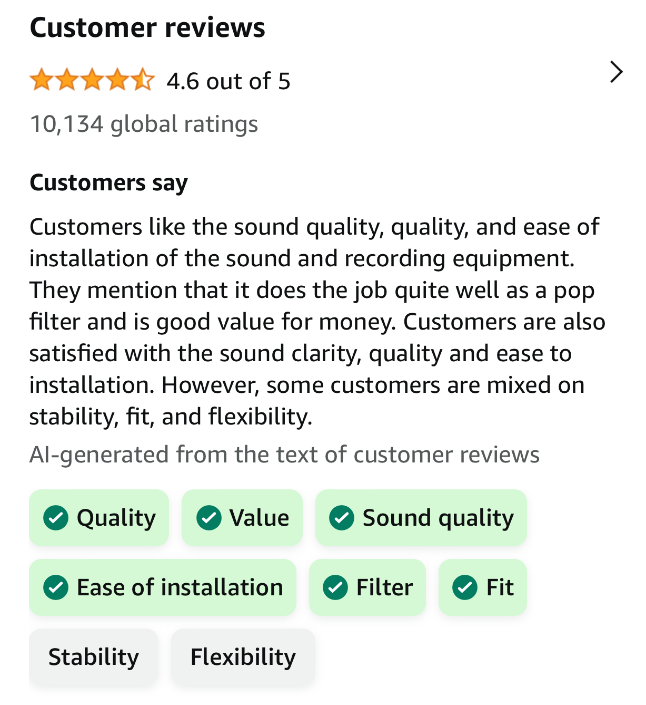
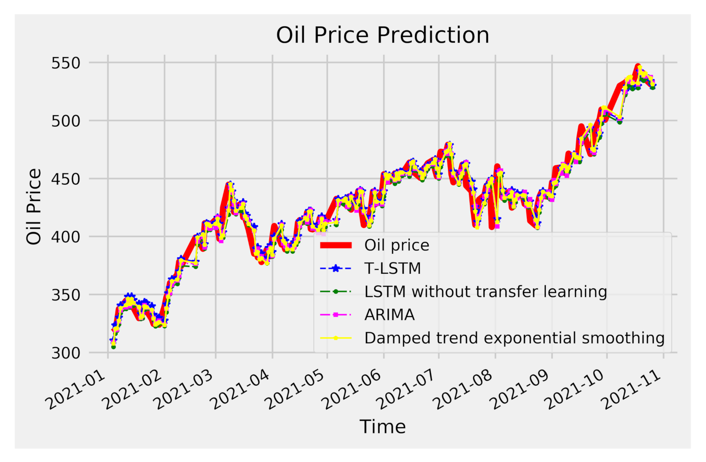
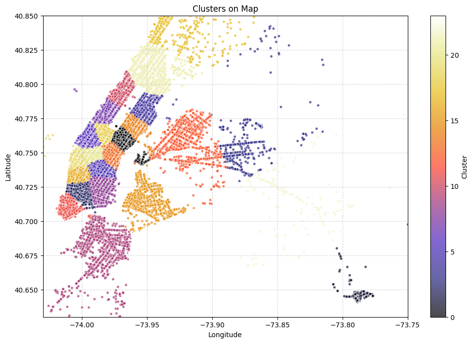
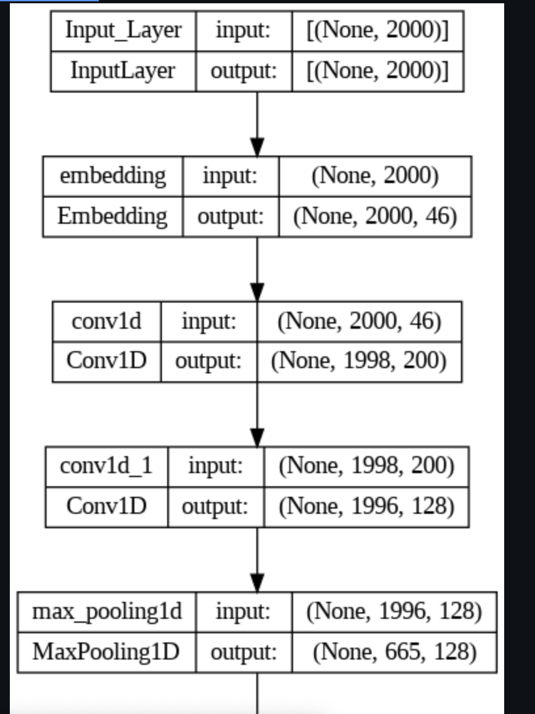

Food Reviews Classification Using BERT and MLFlow.
Constructed an end-end pipeline for classifying reviews utilizing BERT embeddings enhancing model accuracy to 92.1% from previous best, which is 76%
Monitored and experimented with the model via MLFlow; developed a Flask-based web app deploying on AWS EC2 instance.
Pipeline handled data preprocessing, including HTML tag removal using Beautiful Soup, Bert tokenization, and model prediction workflow.
Python
Tensorflow
NLP
MLFlow
AWS
Flask
Transformers
BERT
Individual
Independent

Low Latency Text Document Classifier Using CNN.
Implemented a document classifier using CNN architecture, capable of categorizing 18,828 text documents into 20 classes(doc formats) with latency less than 0.4ms leveraging pre-trained Glove and char-level embeddings
Model 1: Word embeddings are based on pre-trained Glove vector where each embedding has size of 300 dimensions.
Model 2: Char CNN char embeddings are based on pre-trained char embeddings which can be downloaded
Python
Tensorflow
NLP
Machine Learning
Neural Networks
Individual
Independent

Multi-Modal learning for Visual Question Answering.
Developed a Multi-modal solution to answer open-ended questions about images; Implemented a vanilla Visual Question Answering (VQA) model following the initial VQA paper, attaining impressive accuracy with low latency.
Experimented with LLM, BERT, and LSTM with Glove embeddings for text encoding, Vgg-16, ResNet-50, and custom Densenet model for image encoding, elevating performance by 10% compared to the benchmark model. Performed extensive Exploratory Data Analysis on Input Questions (Text Data) deriving key information and Conducted analysis on Images, finding aspect ratio, number of channels and pixel intensity of the images.
Python
Tensorflow
Deep Learning
NLP
Computer Vision
Distributed Computing
Individual
Academic

Marketing Advertisement Experimentation.
Business Objective : As a product data scientist at a leading marketing firm, goal is to meticulously design, execute, and analyze an A/B experiment that pits a traditional product advertisement against a Public Service Announcement (PSA).
Implemented A/B testing to gauge the relative effectiveness of advertisements versus public announcements on consumer conversion rates. Identified conversion trends like peak days and hours-for-ads through detailed data analysis and visualization. Conducted chi-squared and confidence interval tests to confirm statistical significance, and calculated the sample size for 80% power, achieving a 31.2% uplift in conversion rate.
AB Testing
Python
Statistical Analysis
Exploratory Data Analysis
Individual
Independent
Speech Detection Using Augmented Deep Learning.
Led a team of two to reduce overfitting on audio data by leveraging the Librosa library for data augmentation, generating raw audio samples and spectrogram data. Performed Exploratory Data Analysis on Audio samples;
Conducted extensive feature engineering to create four distinct audio datasets that improved the model performance. Trained Four LSTM models on four different feature engineered datasets and observed an F1-score improvement from 32% on spectrogram data to 81% on raw data.
In addition, used Tensorflow callbacks such as Tensorboard, Model Checkpointing and implemented a custom AUC score callback.
Tensorflow
Deep Learning
Audio Data
LSTM
Multi class classification
Group
Academic

Multivariate Oil Prices Forecasting.
Led a team of 4 to create ETS, Holt-Winters, and ARIMA time series models to predict oil prices from non-stationary time series, conduct ADF tests for stationarity, and implement moving average-based missing value imputation.
Performed Exploratory Data Analysis to find trend and seasonality of the time-series. Infact, decompostion plot revealed seasonality in time-series. Moreover, first order differencing resulted in stationary time-series. Residual analysis to check model adequacy and used QQ plot to check if residuals are normally distributed.
Based on RMSE and visual assessment of the forecast plots, the ARIMA(1,1,1) model was chosen for its superior performance in forecasting oil prices.
R
Time Series Forecasting
Exploratory Data Analysis
Residual Analysis
Group
Academic

Taxi Demand Prediction
Goal is to predict the demand of the taxi, given a pickup location (longitude and latitude). Boosted model pipeline efficiency using Dask for distributed computing, handling large datasets over 20 GB.
Performed Extensive Exploratory Data analysis on the DataFrame using Dask's lazy evaluation method.
Enhanced feature engineering with statistical tests and K-Means clustering for pickup locations based on longitude and latitude, optimized by Silhouette score. Moreover, used Bayesian hyper-opt technique to tune the hyperparameters. Trained an XGBoost and Random Forest Regressor on the data resulting in best test MAPE of 1.02
Python
Machine Learning
Bayesian Optimization
K-Means Clustering
Distributed Computing
Ensemble Modeling
Individual
Independent

Transfer Learning using VGG16
Applied the concepts learned in the Transfer Learning using VGG16. Trained three models :
Using VGG-16 pretrained network without Fully Connected layers and initilize all the weights with Imagenet trained weights.
After VGG-16 network without FC layers, adding a new Conv block, 2 FC layers and an output layer to classify 16 classes.
Final architecture will be INPUT, VGG-16 without Top layers(FC), Conv Layer, Maxpool Layer, 2 FC layers and a Output Layer.
Summary after training the models:
No. of trainable parameters for model3 > model2 > model1. Validation accuracy for model2 and model1 is more or less same, Since we used pretrained Vgg16 model without training its params.
Python
Tensorflow
Deep Learning
Transfer Learning
Convolutional Neural Network
Individual
Academic